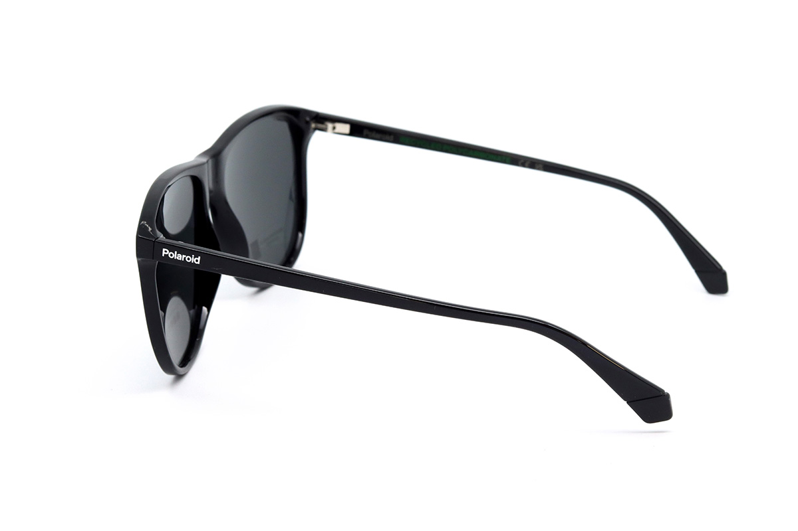
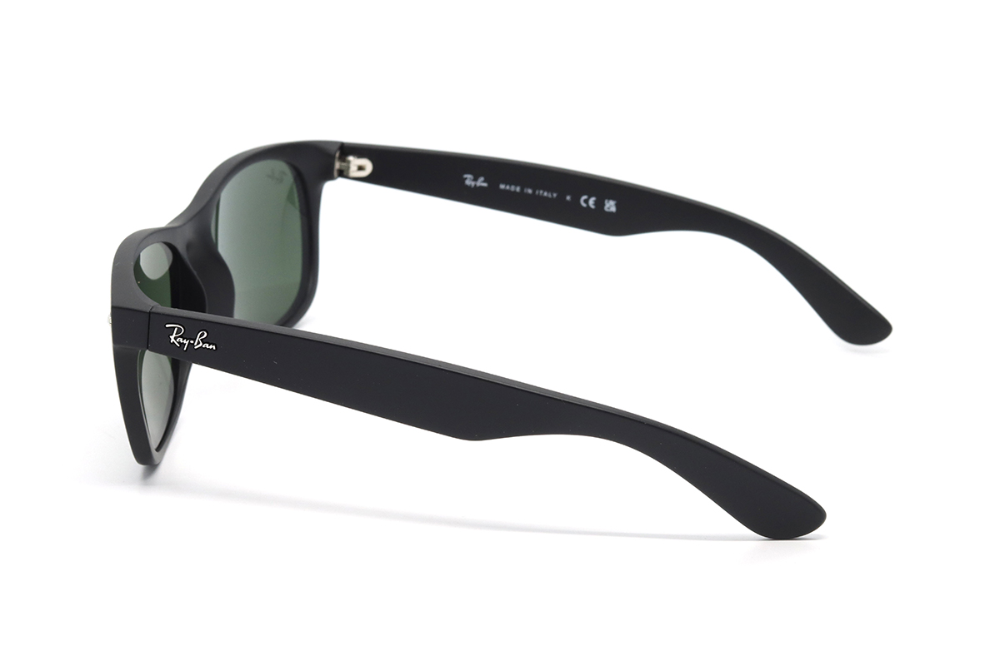
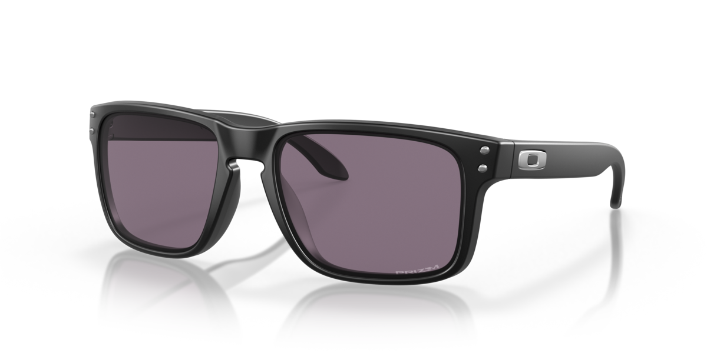
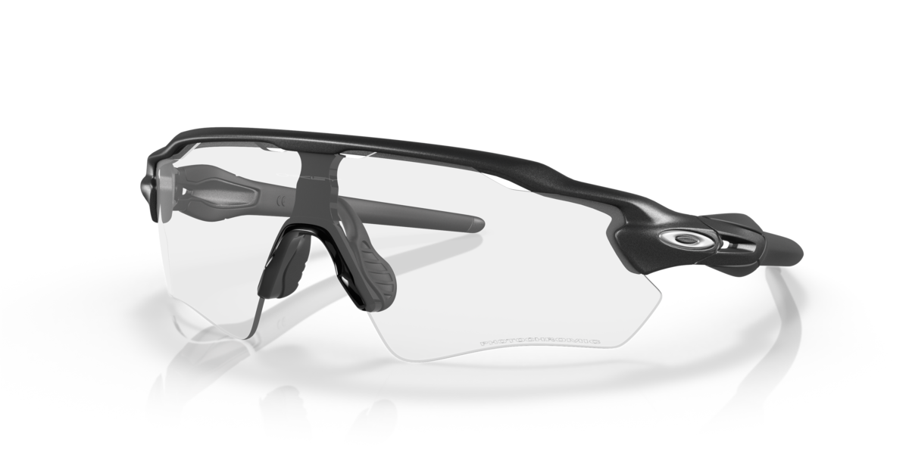
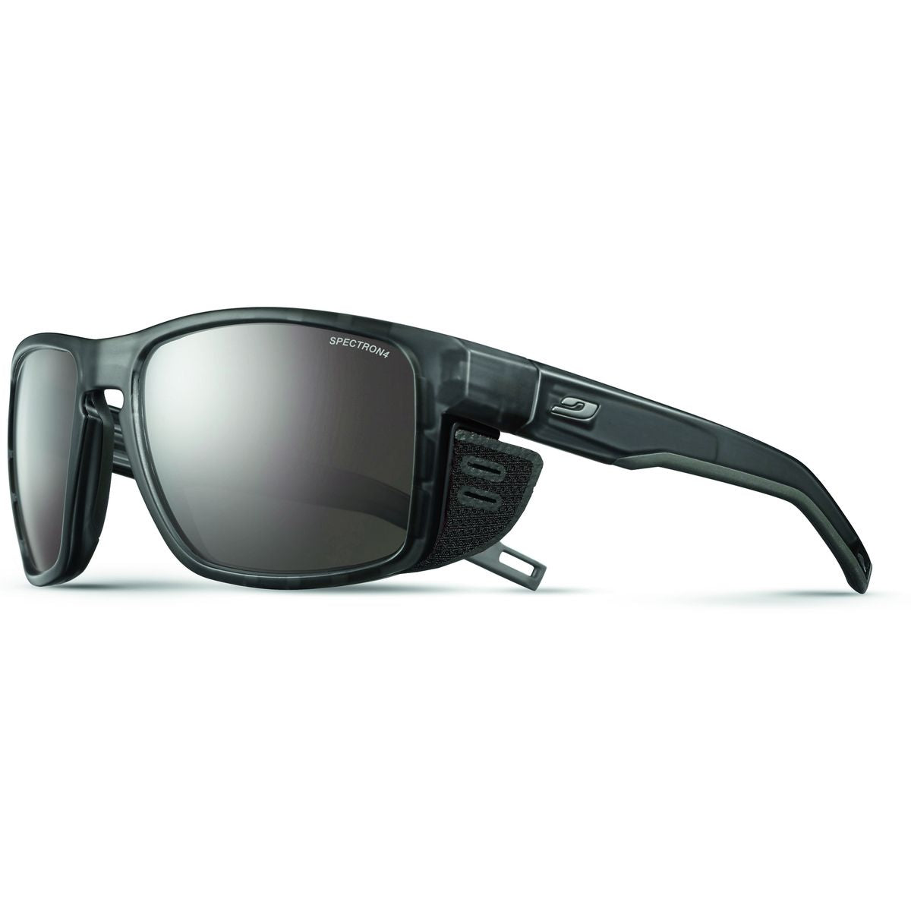

Polaroid PLD 4178/S
Нейтрально-сіра лінза, категорія 3 і доступна ціна. Найлогічніша перша примірка.
Головний критерій — не бренд, а відсутність викривлень, комфорт кольорів і посадка. Найінформативніший перший тест: сіра поляризована лінза Polaroid ↔ неполяризоване мінеральне скло Ray‑Ban.
Нейтрально-сіра лінза, категорія 3 і доступна ціна. Найлогічніша перша примірка.
Окрема спеціалізована пара для снігу та високогір’я. Це не міські окуляри.
Ціни й наявність можуть змінюватися. Відкрий картку товару та зарезервуй конкретну модель перед поїздкою.

Фото: ЛюксоптикаНайдоступніший спосіб перевірити нейтральну сіру лінзу. Кольори змінюються мінімально, а поляризація прибирає відблиски від дороги, води та скла.

Фото: ЛюксоптикаЕталонне порівняння з Polaroid: дуже чисте мінеральне скло, але без поляризації. Допоможе відділити реакцію на затемнення від реакції на поляризаційний фільтр.

Фото: OakleyЛегші та ударостійкіші за Ray‑Ban, краще тримаються під час активного руху. Виглядають як звичайні міські окуляри, але мають спортивну конструкцію.

Фото: OakleyУ слабкому світлі лінза майже прозора, тому це найкращий тест на мінімальне відчуття «я дивлюся крізь фільтр». Широкий щит прибирає рамку з центру поля зору.

Фото: JulboСпеціалізована гірська пара. Бокові шторки блокують світло, відбите від снігу, а категорія 4 розрахована на екстремально яскраві умови й висоту.
Перед кожною поїздкою зарезервуй модель і попроси дозволити 5–10 хвилин подивитися в ній на вулиці.
В одному салоні порівняй сіру поляризовану лінзу з неполяризованим мінеральним склом.
Обрати Люксоптику ↗Holbrook є на Малевича, 87; Radar — на Лесі Українки, 12. Це тест Prizm проти фотохрому.
Побудувати маршрут ↗Окрема примірка на Кирилівській. Перевір бокові шторки, вентиляцію та чи не тиснуть дужки.
Відкрити мапу ↗Не оцінюй окуляри лише під магазинними лампами. Важливе не перше «вау», а стабільне, природне сприйняття під час руху.
Для звичайних сонцезахисних окулярів без діоптрій медичний рецепт не потрібен. Давній епізод сухого ока, який минув, цього не змінює. Оптик у салоні допоможе з посадкою, категорією лінзи та перевіркою UV.
Плановий огляд можна зробити окремо, якщо ти багато років не перевіряв очі, але він не повинен затримувати купівлю захисту від сонця.